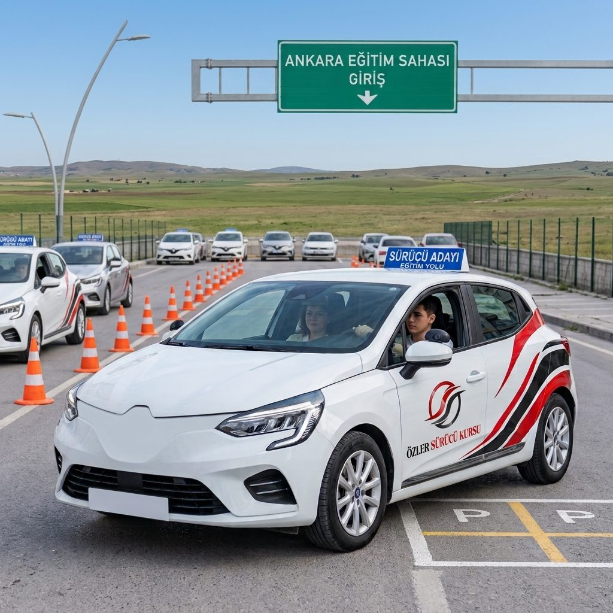

Ehliyete giden yol Özler'den geçer.
B sınıfı manuel ve otomatik ehliyet kursu. Evraklarını internetten yükle, ön kaydını bırak, seni biz arayalım.

otomatik
Ön kayıt üç adımda biter.
Kursa gelmeden evraklarını hazırlarsın, geldiğinde işin kısalır.
Formu doldur
Adını, telefonunu ve hangi vitesi istediğini yaz.
Evraklarını yükle
Fotoğraf, diploma, sağlık raporu. Telefondan çekip yükleyebilirsin. İstersen kursa elden de getirirsin.
Seni arayalım
Başvurun kursa ulaşır, kurs seni arar.
B sınıfı, iki vites seçeneği.
Hangisiyle eğitim alacağını kayıtta sen seçersin.
Manuel vites
Hem manuel hem otomatik vitesli otomobili kullanma yetkisi verir.
- Klasik direksiyon eğitimi
- Yokuş kalkışı
- Park
Otomatik vites
Otomatik araçla eğitim ve sınav. Ehliyet yalnızca otomatik vitesli araç yetkisi verebilir, kayıtta bizden öğren.
- Şehir içi sürüş
- Park
- Kavşak ve şerit
Kayıttan sonra da yanındayız.
Öğrenci panelinden eksik evraklarını tamamlar, randevu ister, ödemelerini ve ders videolarını takip edersin.
Kayıt için gerekli evraklar
Evraklarını internetten yükleyebilir ya da kursa getirebilirsin.
- 2 adet biyometrik fotoğraf
- DiplomaÖğrenci belgesi ve tastikname de geçerlidir.
- Sağlık raporuAile hekiminden ücretsiz alınabilir.
- Nüfus cüzdanı fotokopisi
- Adli sicil kağıdı (sabıka kaydı)
- E-Devlet şifresiKayıt sırasında yanında olsun. Bu siteye yazmana gerek yok.
Bilmen gerekenler
Online ön kayıt, kayıt anlamına gelmez. Kurs başvurunu inceler ve seni arar.
Evrak yüklemek zorunda değilsin. İstersen kursa elden de getirebilirsin.
Sınava hazır mısın?
Üye olmadan deneme sınavını çöz, ders notlarını ve videoları tekrar et.
Kursumuzdan kareler
Ehliyet yolculuğuna bugün başla
Ön kaydını internetten yap, kurs seni arasın.